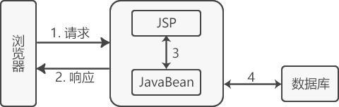
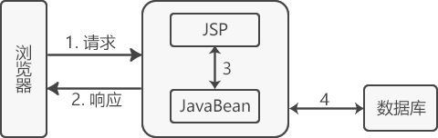
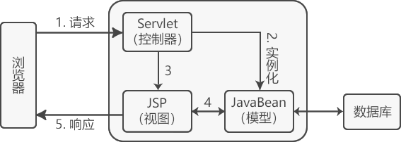

首页 > 编程笔记
MVC设计模式简介
MVC 设计模式一般指 MVC 框架，M（Model）指数据模型层，V（View）指视图层，C（Controller）指控制层。使用 MVC 的目的是将 M 和 V 的实现代码分离，使同一个程序可以有不同的表现形式。其中，View 的定义比较清晰，就是用户界面。
在 Web 项目的开发中，能够及时、正确地响应用户的请求是非常重要的。用户在网页上单击一个 URL 路径，这对 Web 服务器来说，相当于用户发送了一个请求。而获取请求后如何解析用户的输入，并执行相关处理逻辑，最终跳转至正确的页面显示反馈结果，这些工作往往是控制层（Controller）来完成的。
在请求的过程中，用户的信息被封装在 User 实体类中，该实体类在 Web 项目中属于数据模型层（Model）。
在请求显示阶段，跳转的结果网页就属于视图层（View）。
像这样，控制层负责前台与后台的交互，数据模型层封装用户的输入/输出数据，视图层选择恰当的视图来显示最终的执行结果，这样的层次分明的软件开发和处理流程被称为 MVC 模式。
在学习 Servlet 及 JSP 开发时，JavaBean 相当于 Model，Servlet 相当于 Controller，JSP 相当于 View。
总结如下：
SUN 公司推出 JSP 技术的同时，也推出了两种 Web 应用程序的开发模式。即 JSP+JavaBean 和 Servlet+JSP+JavaBean。

通过上图可以发现 JSP 从 HTTP Request（请求）中获得所需的数据，并进行业务逻辑的处理，然后将结果通过 HTTP Response（响应）返回给浏览器。从中可见，JSP+JavaBean 模式在一定程度上实现了 MVC，即 JSP 将控制层和视图合二为一，JavaBean 为模型层。
JSP+JavaBean 模式中 JSP 身兼数职，既要负责视图层的数据显示，又要负责业务流程的控制，结构较为混乱，并且也不是我们所希望的松耦合架构模式，所以当业务流程复杂的时候并不推荐使用。
相比 JSP+JavaBean 模式来说，Servlet+JSP+JavaBean 模式将控制层单独划分出来负责业务流程的控制，接收请求，创建所需的 JavaBean 实例，并将处理后的数据返回视图层（JSP）进行界面数据展示。
Servlet+JSP+JavaBean 模式的结构清晰，是一个松耦合架构模式，一般情况下，建议使用该模式。
总之，我们通过 MVC 设计模式最终可以打造出一个松耦合+高可重用性+高可适用性的完美架构。
MVC 并不适合小型甚至中型规模的项目，花费大量时间将 MVC 应用到规模并不是很大的应用程序，通常得不偿失，所以对于 MVC 设计模式的使用要根据具体的应用场景来决定。
在 Web 项目的开发中，能够及时、正确地响应用户的请求是非常重要的。用户在网页上单击一个 URL 路径，这对 Web 服务器来说，相当于用户发送了一个请求。而获取请求后如何解析用户的输入，并执行相关处理逻辑，最终跳转至正确的页面显示反馈结果，这些工作往往是控制层（Controller）来完成的。
在请求的过程中，用户的信息被封装在 User 实体类中，该实体类在 Web 项目中属于数据模型层（Model）。
在请求显示阶段，跳转的结果网页就属于视图层（View）。
像这样，控制层负责前台与后台的交互，数据模型层封装用户的输入/输出数据，视图层选择恰当的视图来显示最终的执行结果，这样的层次分明的软件开发和处理流程被称为 MVC 模式。
在学习 Servlet 及 JSP 开发时，JavaBean 相当于 Model，Servlet 相当于 Controller，JSP 相当于 View。
总结如下：
- 视图层（View）：负责格式化数据并把它们呈现给用户，包括数据展示、用户交互、数据验证、界面设计等功能。
- 控制层（Controller）：负责接收并转发请求，对请求进行处理后，指定视图并将响应结果发送给客户端。
- 数据模型层（Model）：模型对象拥有最多的处理任务，是应用程序的主体部分，它负责数据逻辑（业务规则）的处理和实现数据操作（即在数据库中存取数据）。
SUN 公司推出 JSP 技术的同时，也推出了两种 Web 应用程序的开发模式。即 JSP+JavaBean 和 Servlet+JSP+JavaBean。
JSP+JavaBean
JSP+JavaBean 中 JSP 用于处理用户请求，JavaBean 用于封装和处理数据。该模式只有视图和模型，一般把控制器的功能交给视图来实现，适合业务流程比较简单的 Web 程序。
通过上图可以发现 JSP 从 HTTP Request（请求）中获得所需的数据，并进行业务逻辑的处理，然后将结果通过 HTTP Response（响应）返回给浏览器。从中可见，JSP+JavaBean 模式在一定程度上实现了 MVC，即 JSP 将控制层和视图合二为一，JavaBean 为模型层。
JSP+JavaBean 模式中 JSP 身兼数职，既要负责视图层的数据显示，又要负责业务流程的控制，结构较为混乱，并且也不是我们所希望的松耦合架构模式，所以当业务流程复杂的时候并不推荐使用。
Servlet+JSP+JavaBean
Servlet+JSP+JavaBean 中 Servlet 用于处理用户请求，JSP 用于数据显示，JavaBean 用于数据封装，适合复杂的 Web 程序。

相比 JSP+JavaBean 模式来说，Servlet+JSP+JavaBean 模式将控制层单独划分出来负责业务流程的控制，接收请求，创建所需的 JavaBean 实例，并将处理后的数据返回视图层（JSP）进行界面数据展示。
Servlet+JSP+JavaBean 模式的结构清晰，是一个松耦合架构模式，一般情况下，建议使用该模式。
MVC优缺点
任何一件事都有利有弊，下面来了解一下 MVC 的优缺点。优点
- 多视图共享一个模型，大大提高了代码的可重用性
- MVC 三个模块相互独立，松耦合架构
- 控制器提高了应用程序的灵活性和可配置性
- 有利于软件工程化管理
总之，我们通过 MVC 设计模式最终可以打造出一个松耦合+高可重用性+高可适用性的完美架构。
缺点
- 原理复杂
- 增加了系统结构和实现的复杂性
- 视图对模型数据的低效率访问
MVC 并不适合小型甚至中型规模的项目，花费大量时间将 MVC 应用到规模并不是很大的应用程序，通常得不偿失，所以对于 MVC 设计模式的使用要根据具体的应用场景来决定。
关注公众号「站长严长生」，在手机上阅读所有教程，随时随地都能学习。内含一款搜索神器，免费下载全网书籍和视频。

微信扫码关注公众号